The missing key to understanding christopher nolan Tom van der Linden · Like Stories of Old ·Mar 31, 2022 · 16 min read · Culture 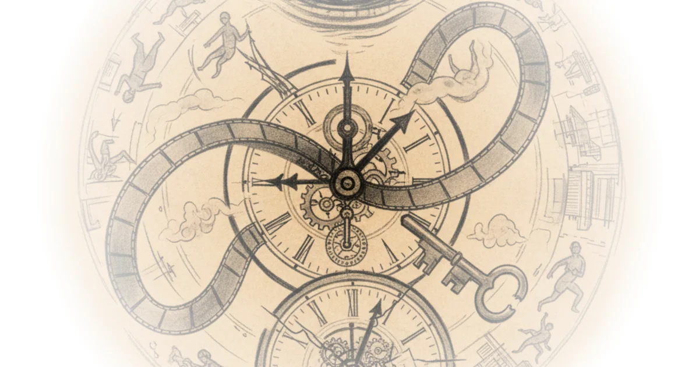
How to be anonymous in a protest The Hated One · The Hated One ·Mar 27, 2022 · 18 min read · Law & Rights
Ronald Reagan & the biggest failure in physics BobbyBroccoli · BobbyBroccoli ·Mar 20, 2022 · 55 min read · Science
You should make a digital bugout bag The Hated One · The Hated One ·Mar 18, 2022 · 11 min read · AI & Tech 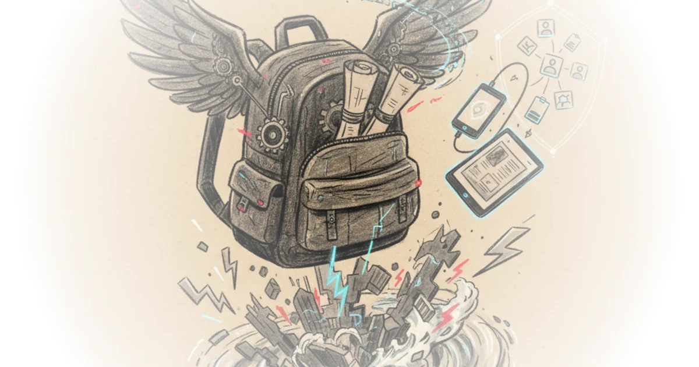
Rules for interacting with college professors - office hours, email, letters of recommendation Jeffrey Kaplan · Jeffrey Kaplan ·Mar 9, 2022 · 20 min read · Philosophy 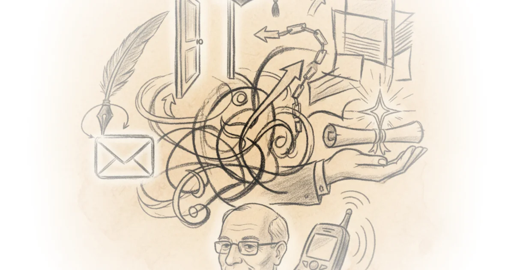
Hardcore history ep68 – (blitz) human resources Dan Carlin · Dan Carlin ·Mar 7, 2022 · 282 min read · History
Let's read! David hume, 1748, sect. IV of enquiry concerning human understanding Kenny Easwaran · Kenny Easwaran ·Mar 6, 2022 · 52 min read · Philosophy
Can we survive the coming decades? Dave Borlace · Just Have a Think ·Mar 6, 2022 · 13 min read · Science 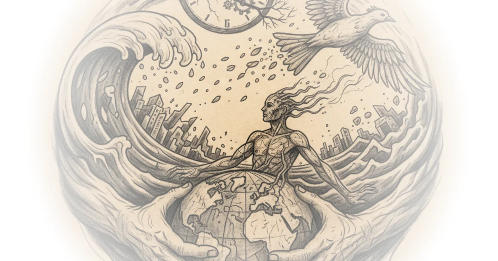
Why Russia can’t replace tsmc Asianometry · Asianometry ·Mar 3, 2022 · 13 min read · Foreign Policy 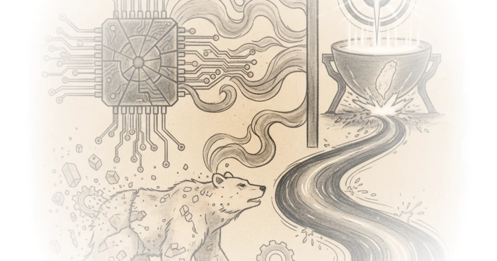
Let's read! Laurence BonJour, 2014, "in defense of the a priori" Kenny Easwaran · Kenny Easwaran ·Mar 1, 2022 · 48 min read · Philosophy 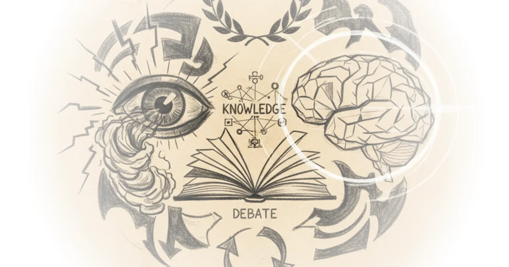
#TyskySour: Restrictions over; queen gets covid; trojan horse hoax; epstein associate suicide Novara Media · Novara Media ·Feb 21, 2022 · 73 min read · Political Strategy 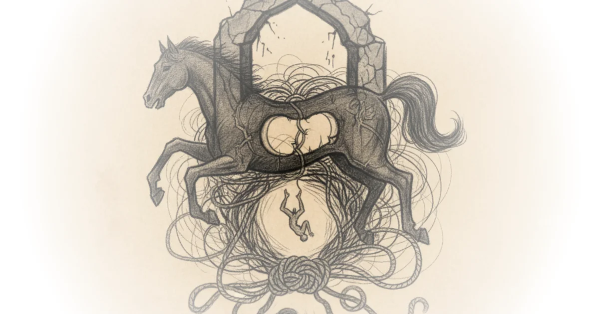
Algae - natures answer to fossil fuels and plastics! Dave Borlace · Just Have a Think ·Feb 20, 2022 · 13 min read · Science 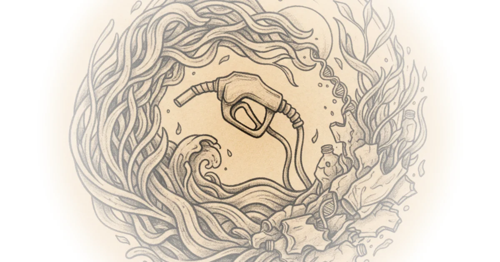
Let's read! Kourken michaelian, 2011, "generative memory" Kenny Easwaran · Kenny Easwaran ·Feb 19, 2022 · 74 min read · Philosophy 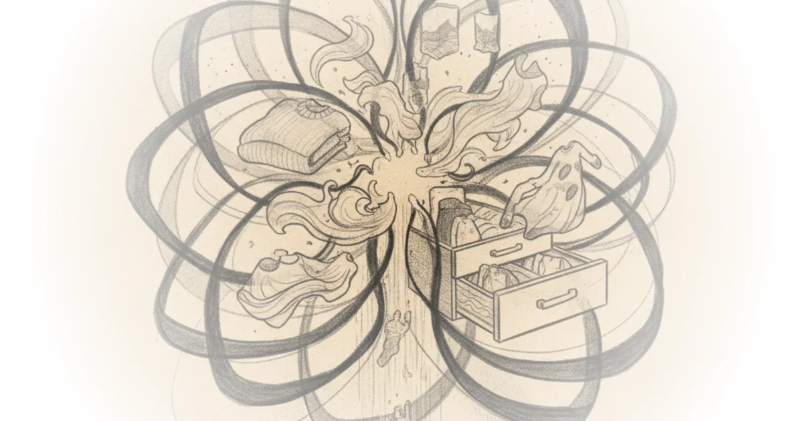
Become anonymous & untraceable | how to securely install & use tails The Hated One · The Hated One ·Feb 18, 2022 · 10 min read · AI & Tech 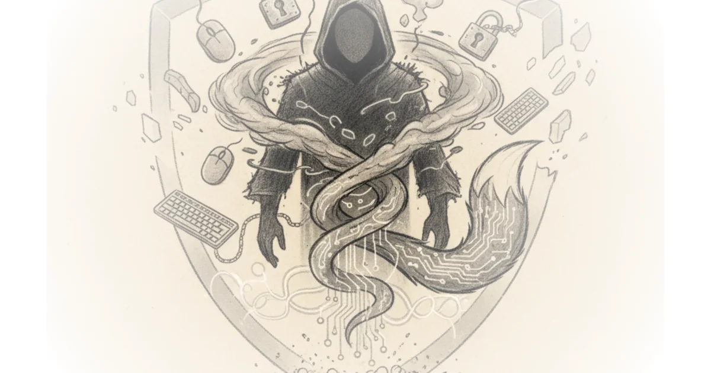
14. Vijayanagara - the last emperors of South India Paul Cooper · Fall of Civilizations ·Feb 18, 2022 · 123 min read · History
Fourth crusade: From sack to restoration - medieval documentary Kings and Generals · Kings and Generals ·Feb 17, 2022 · 96 min read · History
Meet the ‘crocodile of wall street' Patrick Boyle · Patrick Boyle ·Feb 11, 2022 · 12 min read · Economics
The nature of space and time ama Matt O'Dowd · PBS Space Time ·Feb 10, 2022 · 26 min read · Science 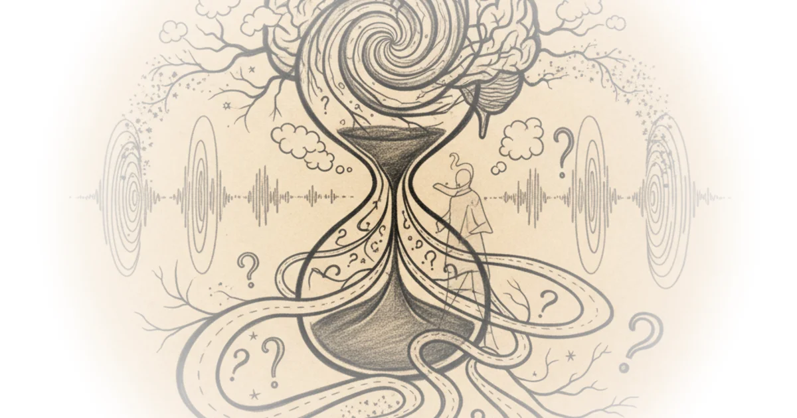
Spinoza: A complete guide to life Then & Now · Then & Now ·Feb 7, 2022 · 34 min read · Philosophy 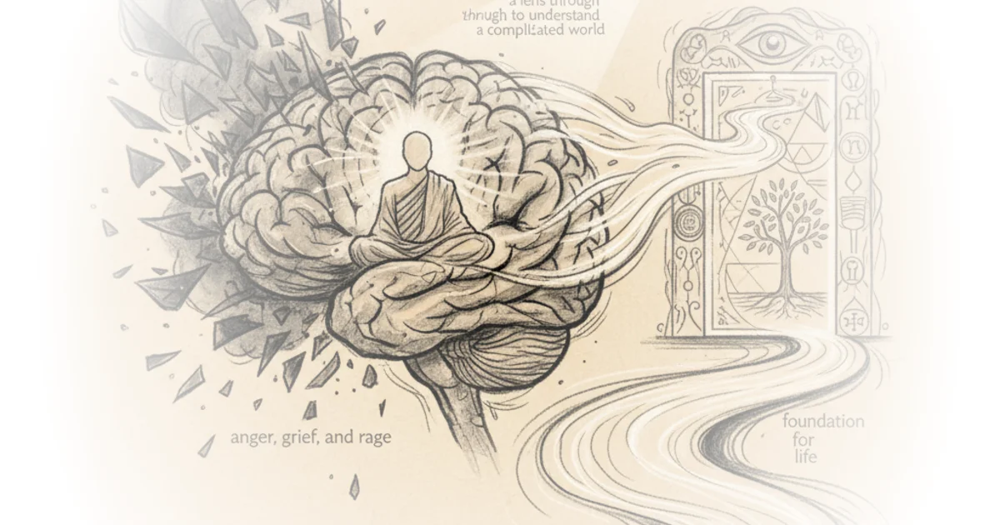
Ep19 asymmetrical perspectives Dan Carlin · Dan Carlin ·Feb 5, 2022 · 81 min read · History 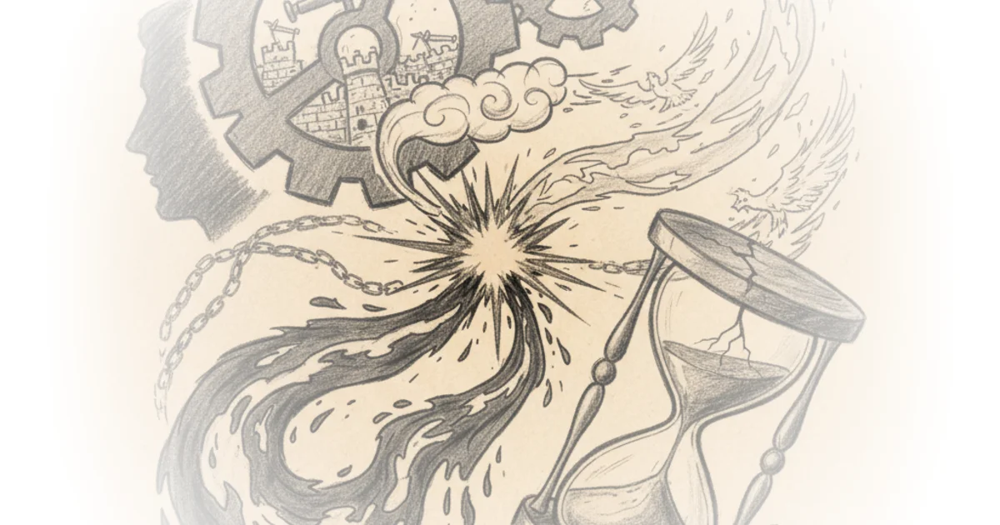
Doing real science (and breakdancing) in zero gravity Rohin Francis · Medlife Crisis ·Feb 1, 2022 · 14 min read · Public Health 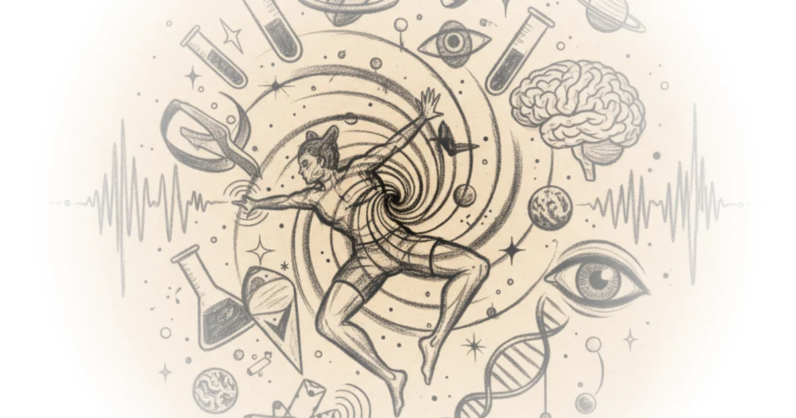
Celebrating 400,000 subscribers! Andrew Henry · Religion For Breakfast ·Jan 30, 2022 · 48 min read · Faith 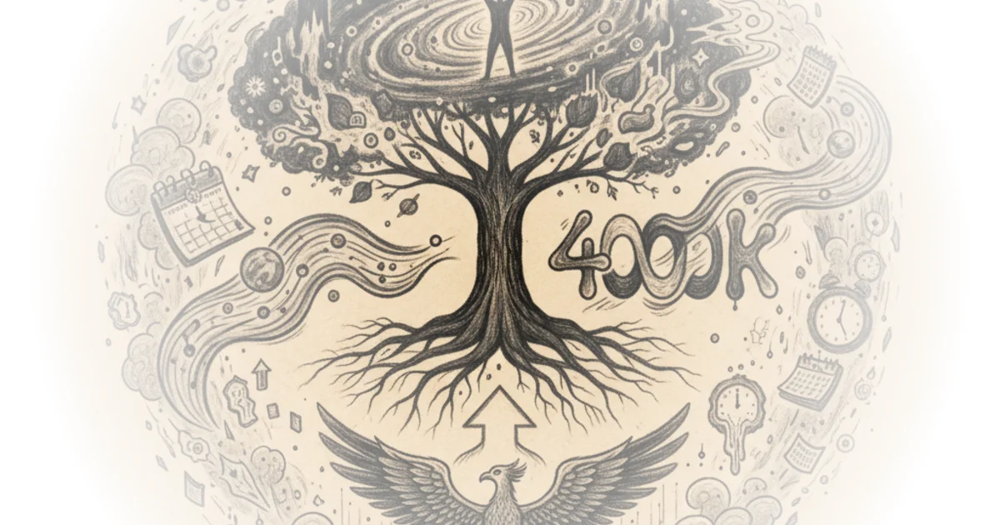
That time a biker gang tried to buy a Canadian nuclear bunker BobbyBroccoli · BobbyBroccoli ·Jan 27, 2022 · 11 min read · History 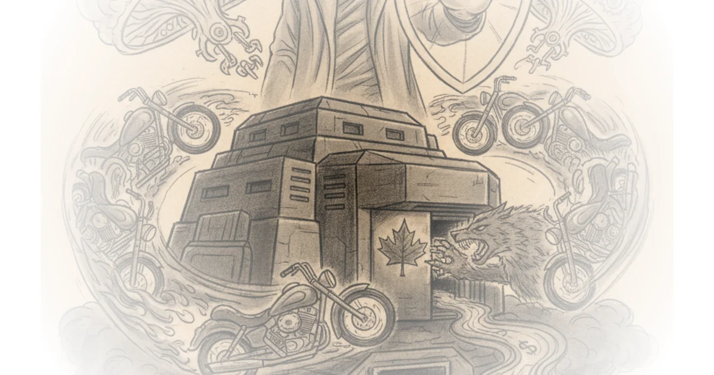
Johnson approaches judgement day as met investigate downing street Novara Media · Novara Media ·Jan 26, 2022 · 54 min read · Law & Rights
Ancient origins of the kyivan rus: From rurikids to mongols documentary Kings and Generals · Kings and Generals ·Jan 23, 2022 · 90 min read · History
Weeklystream 53: Q&a with sound designer dane davis Benn Jordan · Benn Jordan ·Jan 13, 2022 · 140 min read · Music
Speedrunning my electrical engineering master's BobbyBroccoli · BobbyBroccoli ·Jan 4, 2022 · 32 min read · AI & Tech